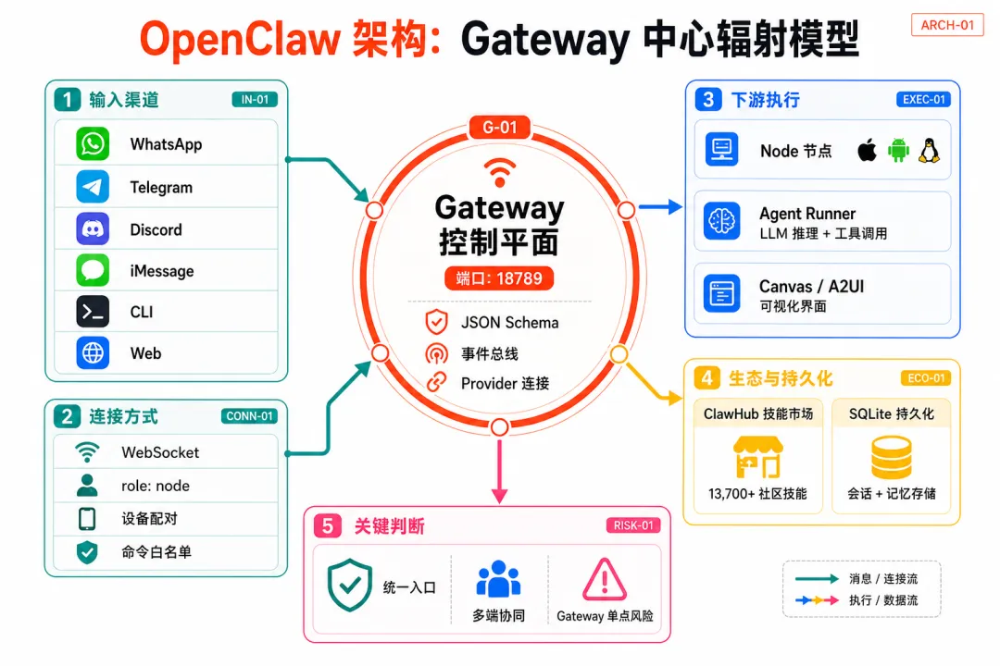
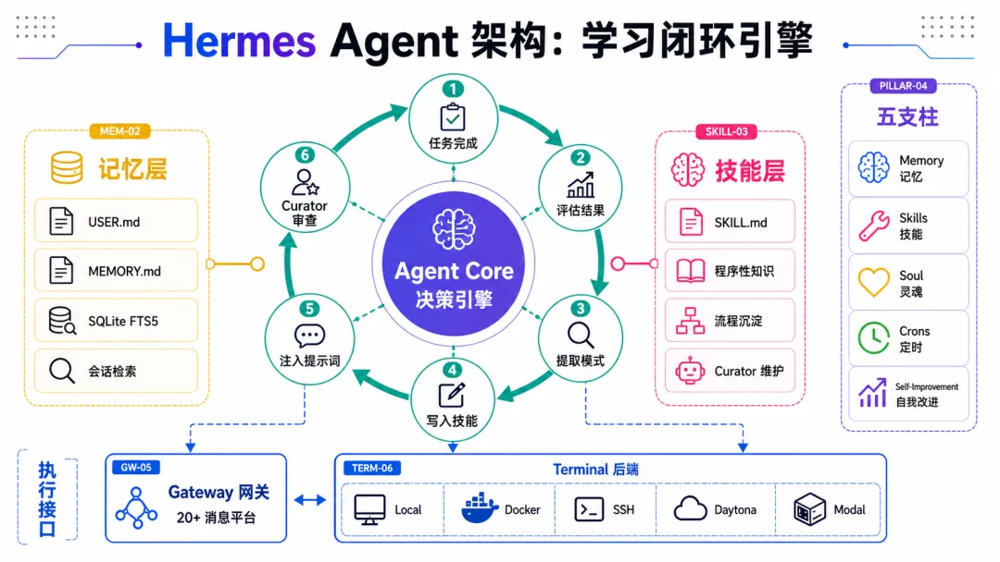

Part 01 / 现象
两只「龙虾」引爆全球开发者社区
2026 年的 AI Agent 赛道,没有人能绕过 OpenClaw 和 Hermes Agent 这两个名字。
先说 OpenClaw。这个由奥地利开发者 Peter Steinberger 发起的「周末项目」,2025 年 11 月以 Clawdbot 之名低调上线,72 小时内 Star 从不到 1 万暴涨到 6 万,两天突破 10 万,单日最高新增 17,830 颗 Star——直接打破了 GitHub 的历史记录。中文社区管它叫「养龙虾」,腾讯云、阿里云、京东云迅速跟进提供一键部署,国内甚至出现了 Kimi Claw、MaxClaw、QClaw 等一系列套壳产品。
Hermes Agent 则在 2026 年 2 月底由 Nous Research 发布,10 周内拿下 11 万 Star。到 5 月中旬,NVIDIA 官方博客为其专门撰文,标题直接喊出「self-evolving agents」。在 OpenRouter 的全球日活排行榜上,Hermes 以 224B 日 Token 消耗量反超 OpenClaw,登顶全球第一。
社区的讨论也极度两极化。有人说 Hermes 是「2026 年最强 Agent Harness」,有人反驳「不过是又一个 OpenClaw 仿品」。但当我们拆开引擎盖看底层架构,会发现这两个项目从根子上就走了完全不同的路——这才是真正值得深挖的东西。
Part 02 / 身世
一张表读懂两个项目的来龙去脉
维度 | OpenClaw | Hermes Agent |
|---|---|---|
发布时间 | 2025 年 11 月 | 2026 年 2 月 |
背后团队 | Peter Steinberger（PSPDFKit 创始人）→ 已加入 OpenAI,项目移交独立基金会 | Nous Research（Hermes/Nomos/Psyche 模型系列,2023 年 A 轮 $50M） |
开源协议 | MIT License | Apache 2.0 |
GitHub Stars | 345,000+ | 140,000+ |
核心语言 | TypeScript / Swift | Python |
一句话定位 | 住在消息 App 里的 AI 网关 | 会自我进化的 AI 引擎 |
模型支持 | 主推 Anthropic API,也支持 OpenAI / Gemini / Ollama | 400+ 模型（OpenRouter / Nous Portal / OpenAI / Ollama / DeepSeek / Kimi 等） |
消息渠道 | 50+ 渠道（WhatsApp / Telegram / Discord / iMessage / 飞书等） | 20+ 渠道（Telegram / Discord / Slack / WhatsApp / 飞书 / 企微 / 钉钉等） |
一句话概括二者的本质差异:CSDN 上有人总结得很精炼——OpenClaw 是打通大模型与业务的「AI 网关」,Hermes Agent 是让智能体自主进化的「AI 引擎」。接下来,我们从架构层面把这个差异展开讲。
Part 03 / 架构
「Hub-and-Spoke 网关」 vs 「五支柱引擎」
OpenClaw: Gateway 中心化控制平面
OpenClaw 的架构围绕一个 单进程 Gateway 构建——一个长期运行的 Node.js 进程,是整个系统的大脑和路由器。所有的消息渠道（WhatsApp、Telegram、Slack 等）、CLI 客户端、移动端 Node、Web 界面,都通过 WebSocket 连接到这个 Gateway。这是一个典型的 Hub-and-Spoke（中心辐射） 架构。

Gateway 的职责非常集中:维护 Provider 连接、对入站帧做 JSON Schema 校验、广播 agent / chat / presence / heartbeat / cron 等事件,同时也是唯一能开启 WhatsApp Session 的进程。远程节点（比如你的 Mac、Linux 服务器、手机）通过 WebSocket 以 role: node 身份连接,经过设备配对后获得执行权限。
这个设计带来的好处是:统一入口、多端协同。一个 Gateway 管所有渠道,你在 WhatsApp 上聊到一半,换到 Telegram 继续,上下文不丢。同时,代码执行可以分布到不同 Node 上——你的 Mac 跑浏览器自动化,Linux 服务器编译代码,手机拍照——都通过同一个 Gateway 协调。
OpenClaw Gateway 启动
# 前台开发模式
openclaw gateway
# 后台守护进程（生产模式）
openclaw gateway --daemon
# 远程 Node 连接到 Gateway
openclaw node run --host--port 18789 但弱点也很明显:Gateway 是单点,安全研究人员发现有超过 4 万个暴露在公网的 Gateway 实例。2026 年 1 月还出过一个 WebSocket Origin Bypass 导致远程代码执行的 CVE（CVE-2026-25253）。社区的技能市场 ClawHub 也遭遇过恶意技能投毒事件。
Hermes Agent: 五支柱自进化架构
Hermes 走了一条截然不同的路。如果说 OpenClaw 是在回答「怎样把 AI 连接到一切」,Hermes 要回答的问题是「怎样让 AI 越用越聪明」。它的架构围绕 五根支柱 构建:
四层记忆架构:MEMORY.md（环境知识）、USER.md（用户画像）、Skills（程序性记忆）、SQLite FTS5（全文检索历史会话）
🔧 Skills 技能
Agent 完成复杂任务后,自动提炼流程写入 SKILL.md。下次遇到类似任务直接调用,无需从头推理
👤 Soul 灵魂
SOUL.md 定义 Agent 的身份人格、语气风格、行为边界。多 Agent 共享底座模型但各有灵魂
⏰ Crons 定时任务
自然语言设定定时任务,内置调度器,不需要额外搭 crontab 或外部调度系统
而第五根支柱——Self-Improvement 自我改进闭环,是 Hermes 最核心的差异化能力,也是社区争论最多的地方。我们在下一节展开。

Hermes Agent 安装与启动
# 一键安装（自动检测环境、安装依赖）
curl -fsSL https://raw.githubusercontent.com/NousResearch/hermes-agent/main/scripts/install.sh | bash
# 交互式配置向导
hermes setup
# 选择/切换模型
hermes model
# 创建隔离的多 Agent 实例
hermes profile create designer --clone
hermes profile create programmer --clonePart 04 / 核心差异
自我进化闭环:Hermes 真正的护城河
大多数 Agent 框架的执行循环是:接收任务 → 规划 → 执行 → 返回结果 → 会话结束。下一次任务启动时,从相同的基线重新开始。
Hermes 在执行完成之后,额外加了一层:Agent 会自动回顾刚刚完成的任务,评估哪些步骤有效、哪些失败,然后把成功的模式蒸馏成一份结构化的 SKILL.md 文件写入磁盘。下次遇到类似任务时,这份技能会被自动加载到系统提示词中,Agent 直接按照已有的流程执行,无需重新摸索。
DEV 社区 / 认知科学视角分析
「Hermes 的记忆架构几乎映射了人脑的四种经典记忆系统——身份记忆、语义记忆、程序性记忆、情景记忆,外加工作记忆和记忆巩固。这不只是聪明的工程,更像是一篇论文。」
到了 v0.12 Curator 版本,Hermes 更进一步——引入了一个 Curator 自治系统,它会持续监控技能的使用频率和质量,自动识别退化的技能,基于评分标准进行重构或优化。相当于给 Agent 配了一个专职的「技能管理员」。
作为对比,OpenClaw 的 Skill 体系依赖人工编写或从 ClawHub 社区市场安装。成熟度高、现成可用的技能数量多（13,700+），但 Agent 本身不会从经验中自动生成新技能。用社区的话说:在 OpenClaw 上跑同一类任务 100 次,Agent 不会变好——每次都是从零开始。
学习闭环的实际运作
1用户下发一个复杂任务（如「部署 Next.js 到 Coolify」）
2Agent 多步推理 + 工具调用完成任务,全程记录到 SQLite
3任务完成后触发反思:提取成功模式、失败教训
4调用 skill_manage 工具,自动写入 ~/.hermes/skills/deploy-nextjs-coolify/SKILL.md
5下次类似任务,技能被注入 system prompt,Agent 直接按流程执行
6Curator 定期审查技能质量,退化的技能会被自动重构
Part 05 / 记忆
记忆系统:记住发生了什么 vs 记住什么有效
记忆是 Agent 能否长期使用的关键。两个项目在这件事上的设计哲学差异巨大。
OpenClaw 使用 SQLite + Markdown 文件做持久化,支持跨会话的上下文保持。记忆主要是被动的:用户告诉它记住什么,它才记。Session 结束时,上下文写入存储;下次启动时加载回来。这对于简单的任务路由和上下文延续已经够用。
Hermes 的记忆则是分层的、主动的。它借鉴了认知科学中的多系统记忆模型:
记忆层 | Hermes 文件 | 作用 |
|---|---|---|
身份记忆 | SOUL.md | 定义 Agent 人格、语气、行为边界,全局生效 |
语义记忆 | MEMORY.md（≤2200 字符） | 环境知识、项目约定、工具使用心得 |
用户画像 | USER.md（≤1375 字符） | 用户偏好、技能水平、沟通风格 |
程序性记忆 | ~/.hermes/skills/*.md | 任务执行的标准流程（可自动生成） |
情景记忆 | SQLite + FTS5 全文检索 | 历史会话的可搜索存档 |
记忆巩固 | 定时反思 Pass | 回顾近期会话 → 蒸馏 → 回写 MEMORY.md 或生成新技能 |
关键区别在于:MEMORY.md 和 USER.md 会作为冻结快照注入到每轮对话的 system prompt 中。当记忆使用量达到约 80% 时,Agent 被迫进行信息浓缩——丢弃不重要的,保留核心的。这种机制迫使记忆始终保持高信噪比,而不是无限膨胀拉高 Token 成本。
Composio 评测
「OpenClaw 在编排（Orchestration）上更成熟,Hermes 在学习（Learning）上更有野心。我的建议:用 OpenClaw 当指挥官,Hermes 当执行专家。」
Part 06 / 安全
安全模型:两种截然不同的信任边界
安全性是自托管 Agent 绕不开的话题。两个项目的安全哲学反映了架构上的根本差异。
OpenClaw 采用 操作者显式授权 模型:所有操作需要人工批准,文件驱动身份系统（SOUL.md、AGENTS.md 定义规则）,Node 节点通过设备配对 + 命令白名单限制执行权限。安全边界由人定义,Agent 在边界内执行。但 OpenClaw 已经积累了真实的 CVE 记录——包括 2026 年 1 月的远程代码执行漏洞,以及 ClawHub 技能市场的投毒事件。安全研究人员还发现了超过 4 万个暴露在公网的 Gateway 实例。
Hermes 默认标配了 Docker 容器隔离:每个 Agent 实例运行在独立容器中,拥有自己的 .env 文件、API Key、记忆和技能,容器之间不共享凭据或上下文。此外还支持 SSH、Daytona、Modal 等远程执行后端,让代码执行和宿主机之间有清晰的隔离层。截至 2026 年 5 月,Hermes 尚未出现公开的安全 CVE——但这更多反映的是暴露时间短,而非经过充分验证的安全加固。
安全维度 | OpenClaw | Hermes Agent |
|---|---|---|
默认执行隔离 | 依赖用户配置沙箱 | Docker 容器隔离（默认） |
命令审批 | Node 端 exec policy + 白名单 | 多级审批 + 工具权限控制 |
已知 CVE | CVE-2026-25253（RCE）等 | 暂无公开 CVE |
供应链风险 | ClawHub 曾遭投毒（ClawHavoc 事件） | 技能由 Agent 自生成,第三方依赖少 |
审计工具 | openclaw security audit --deep | Agent 工作日志全量打印在聊天界面 |
值得注意的是,2026 年 3 月中国相关部门限制国企和政府机构在办公电脑上运行 OpenClaw,理由是潜在的安全风险。这从侧面说明,自托管 Agent 的安全性已经不仅仅是技术问题,正在进入政策监管的视野。
Part 07 / 生态
生态之争:13,700 个现成技能 vs 自动生长的技能库
OpenClaw 的 ClawHub 是一个类似 npm 的技能市场,目前有 13,700+ 社区贡献的技能包,覆盖邮件处理、日程管理、代码审查、浏览器自动化等场景。装上就能用,生态成熟度远超 Hermes。国内也有营赛 AI 等商业团队系统性地贡献 Skills。
Hermes 目前没有等量级的第三方技能市场,它的设计思路本身就不依赖外部技能——Agent 从自己的工作经验中生成技能。最新版本支持与 agentskills.io 开放标准兼容,也能直接导入 OpenClaw 的 Skills 配置,迁移成本很低。
在消息渠道覆盖上,OpenClaw 以 50+ 原生渠道的优势遥遥领先,包括 WhatsApp、iMessage、Signal 等 Hermes 尚未覆盖的平台。不过 Hermes 覆盖了国内开发者最关心的飞书、企微、钉钉,甚至支持微信和 QQ Bot,这在国内场景下是一个加分项。
两个项目都支持 Cron 定时任务,但实现方式不同:OpenClaw 的 Heartbeat 机制每 30 分钟唤醒一次 Agent 检查待办;Hermes 支持用自然语言设定调度规则,内置调度器,不需要额外配置。
Part 08 / 总览
全维度对比一览表
对比维度 | OpenClaw | Hermes Agent |
|---|---|---|
架构核心 | Gateway 中心辐射控制平面 | 五支柱学习闭环引擎 |
设计哲学 | 人在决策链中心,Agent 执行规则 | Agent 自主迭代,越用越懂你 |
记忆系统 | SQLite 被动持久化 | 四层主动记忆 + FTS5 + 反思巩固 |
技能机制 | ClawHub 社区市场（13,700+） | Agent 自动生成 + Curator 自维护 |
自我进化 | 无 | 核心能力,内置学习闭环 |
消息渠道 | 50+（最广） | 20+（覆盖国内主流） |
模型灵活性 | 主推 Anthropic,有限多模型 | 400+ 模型,一行切换 |
多 Agent | Gateway 级别路由 | Profile 隔离 + Docker 容器 |
执行后端 | 本地 + Node 远程执行 | Local / Docker / SSH / Daytona / Modal / Singularity（6种） |
定时任务 | Heartbeat 每 30 分钟轮询 | 自然语言 Cron + 内置调度器 |
长时任务 | 社区反馈稳定性一般 | 实测支持 2 小时以上连续运行 |
安全模型 | 操作者授权 + 设备配对 | Docker 隔离 + 多级审批 |
上手难度 | Node.js 环境 + Gateway 配置 | 一行 curl 安装 + 交互式向导 |
社区规模 | 345K Stars / r/openclaw 10.3万人 | 140K Stars / 增速更快 |
适合场景 | 多渠道统一入口、平台化编排 | 个人深度助手、长期知识沉淀 |
Part 09 / 结论
选谁?或者...都要?
经过全面拆解,答案其实已经浮出水面:这两个项目并不是非此即彼的关系,而是在 Agent 的两个不同维度上各自做到了极致。
选择建议
选 OpenClaw 如果你需要...
最广的渠道覆盖（50+），成熟的技能生态（13,700+），多端协同执行（Mac/iOS/Android/Linux 节点统一编排），以及「一个入口管所有」的平台化体验。适合团队级部署和需要快速落地的场景。
选 Hermes 如果你需要...
长期使用越来越懂你的个人助手，自动沉淀工作 Know-how，灵活的模型选择（400+），更好的执行隔离（Docker 默认），以及对国内平台（飞书/企微/钉钉）的原生支持。适合深度个人用户和开发者。
而中文社区正在流行的一种「互补打法」可能是最聪明的选择:OpenClaw 做指挥官负责广泛的平台集成和任务路由,Hermes 做执行专家负责深度个人化和自动技能沉淀。Hermes 官方也支持直接导入 OpenClaw 的 Skills 和记忆配置,迁移和共存的成本很低。
从更宏观的视角看,OpenClaw 和 Hermes 代表了 AI Agent 进化的两个阶段:第一阶段是连接一切——把 AI 接入尽可能多的消息渠道和工具;第二阶段是持续进化——让 Agent 从工作经验中自主学习、自主改进。前者解决的是「覆盖面」问题,后者解决的是「深度」问题。
2026 年下半年,这场「网关 vs 引擎」之争的走向,可能将决定整个开源 Agent 赛道的技术路线。而对于我们这些使用者来说,真正值得关注的不是谁的 Star 更多——而是谁能在你的真实工作流中,持续、稳定、安全地创造价值。